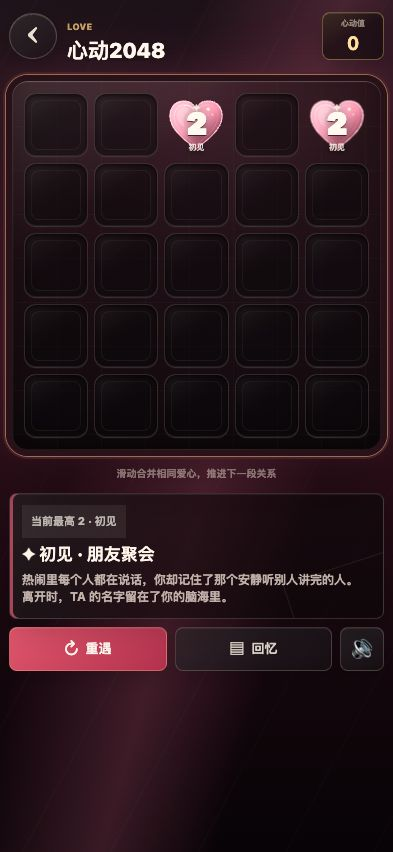
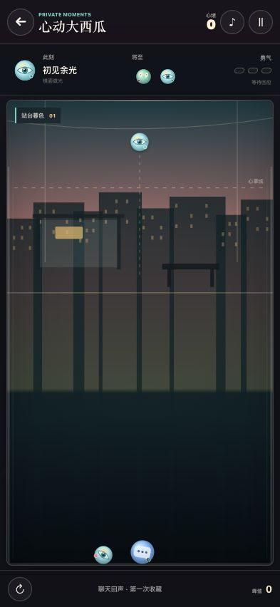
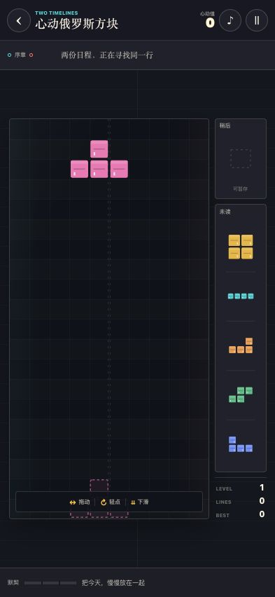
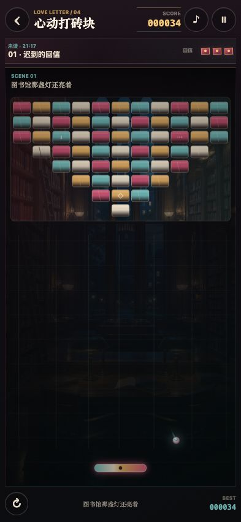
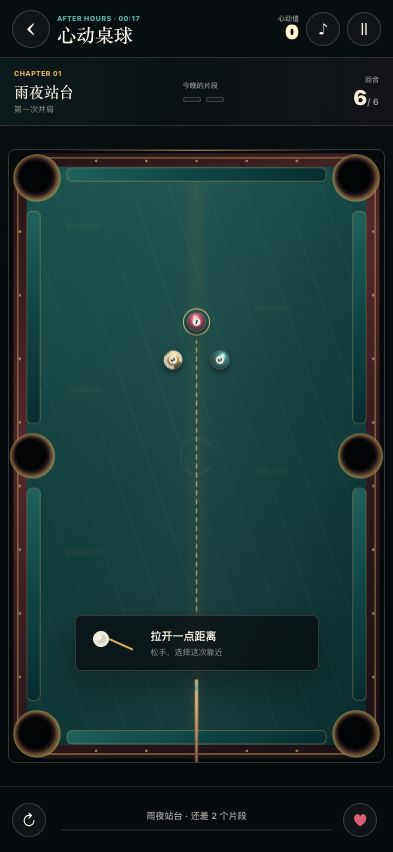

Personal Space · Xi'an
刘勇 / Yong Liu
研究、知识、工具，以及五种可以亲手抵达的心动。
 01Academic
Research & Profile
个人主页
从医学影像到智能感知，查看论文、专利与研究轨迹。
进入
01Academic
Research & Profile
个人主页
从医学影像到智能感知，查看论文、专利与研究轨迹。
进入
 02Knowledge
Notes & Maps
个人知识库
研究方法、阅读笔记与长期积累。
进入
02Knowledge
Notes & Maps
个人知识库
研究方法、阅读笔记与长期积累。
进入
 03Utility
Everyday Workbench
小工具箱
写作、计时、换算与整理。
进入
03Utility
Everyday Workbench
小工具箱
写作、计时、换算与整理。
进入

04Play Love Timeline 心动2048 沿着 5×5 棋盘，把每一次靠近合成一段完整故事。 开始
05Summer Play Memory Merge 心动大西瓜 让散落的眼神、消息和约会，在碰撞里长成共同回忆。 开始
06Rhythm Play Fitting Lives 心动俄罗斯方块 把各自忙乱的生活轻轻放好，让同一行终于完整。 开始
07Echo Play Through The Distance 心动打砖块 接住每一次回应，让往返的微光穿过迟疑与心防。 开始
08Midnight Play One Clear Approach 心动桌球 瞄准、克制、出杆，让一次有分寸的靠近得到回响。 开始
01个人主页
Next个人知识库